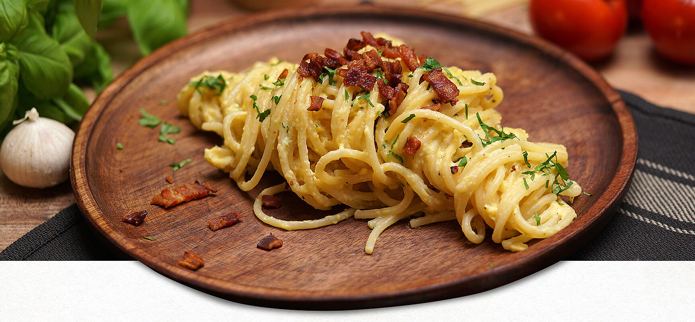

Spaghetti Carbonara

Das Originalrezept für Spaghetti Carbonara mit gebratenen Speck-Würfeln
Zutaten
- 200g Spaghetti
- 150g Pancetta
- 3 Eigelb
- 40g Parmesan
- 1 Knoblauchzehe
- Schwarzer Pfeffer
- Olivenöl
Zubereitung
-
Zuerst den Parmesan mit der Küchenmaschine oder einer Parmesanreibe fein
reiben. Nun die Eier vorsichtig aufschlagen und Eiweiß und Eigelb
trennen. Das Eiweiß benötigst du für dieses Rezept nicht – am besten du
stellst es im Kühlschrank zur Seite. Jetzt verquirlst du das Eigelb mit
dem frisch gemahlenen Pfeffer und dem geriebenen Parmesan. Nun die
Knoblauchzehen sehr fein hacken.
-
Wasser in einem großen Topf zum Kochen bringen und die Spaghetti
hinzugeben. Die Spaghetti sollten gar, aber noch bissfest – also al
dente sein. Zur Probe nimmst du einen einzelnen Spaghetti aus dem
Kochwasser und testest, ob er schon gar ist.
-
Pancetta ist ein Schweinebauchspeck aus Italien. Er wird gesalzen,
luftgetrocknet oder geräuchert. In manchen Regionen wird er auch mit
Rosmarin, Fenchel oder Salbei gewürzt. Pancetta enthält viel Fett,
deshalb braten oder grillen Italiener ihn gern, und er eignet sich auch
gut für die Zubereitung von Saucen. Für original italienische Spaghetti
Carbonara ist Pancetta ein Muss. Manchmal ist die Pancetta-Rinde hart.
Dann solltest du sie entfernen. Den Rest mit einem scharfen Messer in
kleine Würfel schneiden. Nun gibst du ihn in eine heiße Pfanne, zerlässt
somit langsam das Fett und brätst den Pancetta dann kross an.
-
Nun kommen die gekochten Spaghetti zum Pancetta in die Pfanne. Danach
gibst du gehackten Knoblauch und die verquirlte Eier-Parmesanmischung
und etwa eine Kelle vom Kochwasser der Spaghetti dazu. Alles vorsichtig
verrühren, bis die Carbonara die richtige Konsistenz (cremig … molto
delicato!) hat.
-
Zum Schluss fügst du noch einen beherzten Schuss Olivenöl hinzu. Nicht
zu lange auf dem Herd lassen – alle Spaghetti sollten schön cremig
umhüllt sein, das Ei sollte aber nicht stocken. Nun drehst du die
Spaghetti im Topf mit einer großen Gabel (am besten geht eine große
Fleischgabel) in der Sauce und streifst sie anschließend vorsichtig auf
den Teller. Nun noch ein bis zwei Esslöffel gebratene Pancetta-Würfel
darüber und je nach Gusto etwas gehackte Petersilie. Buon Appetito!